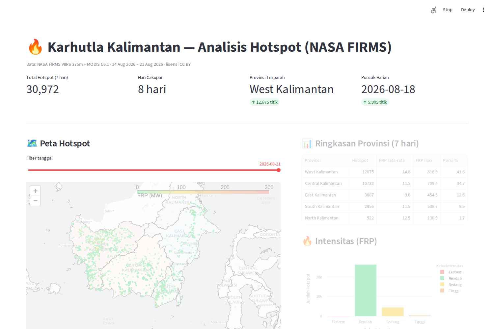
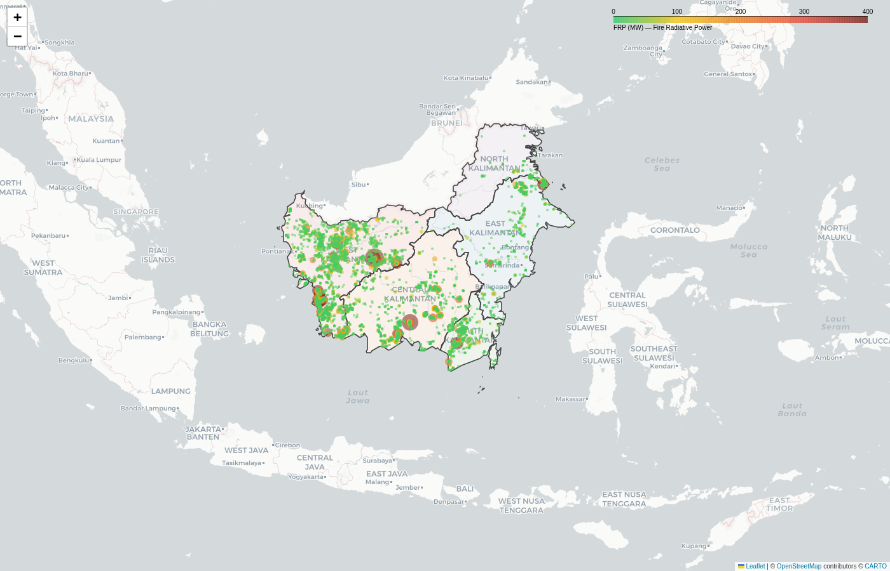

Real-time active-fire monitoring for Indonesian Borneo — turning NASA satellite detection into actionable early warning for the communities most exposed to forest and peatland fires.
Data: NASA FIRMS VIIRS 375m + MODIS C6.1 · Open-source · Bilingual (ID/EN)
Why this matters — and why it's urgent.
Kalimantan (Indonesian Borneo) experiences some of the most severe forest and peatland fires on the planet — the primary driver of the transboundary haze crisis that blankets Southeast Asia each dry season. These fires destroy carbon-rich peatlands, wipe out biodiversity, and cause documented respiratory illness across millions.
Yet the frontline responders — village fire crews, district health offices — largely lack a simple, up-to-the-hour view of where fires are actually burning right now. Official reports lag by days. The result is reactive, not preventive.
NASA tracks every fire daily, but the data is locked in science portals.
Official reports arrive days after fires start — too late for prevention.
60,000+ detections mean nothing without village-level, daily context.
An open, reproducible data pipeline from satellite to dashboard.

Interactive dark-theme dashboard with village search

Satellite fire detection map over Kalimantan
NASA FIRMS fire data (VIIRS 375m + MODIS C6.1) via HDX — no API key.
Point-in-polygon geolocation → every hotspot mapped to its province.
Daily + per-province aggregation, FRP intensity classification.
Tableau-ready CSVs, continuously accumulated history dataset.
Dark-themed Streamlit dashboard: map, search, trends, heatmaps.
Search any village via OpenStreetMap — see fire hotspots within radius.
Open-source, no paid services, fully reproducible.